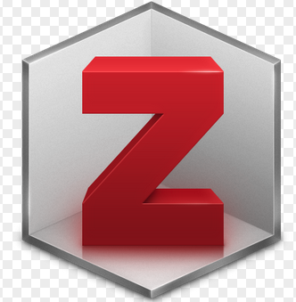
Inleiding
Zotero is een citeermanagement programma voor de desktop met mogelijkheden van online opslagmogelijkheden. Het helpt je om jouw literatuur en andere informatie voor onderzoek te verzamelen en te organiseren. Je kunt er boeken, artikelen, hoofdstukken etc in kwijt. Met Zotero kun je jouw verwijzingen goed managen, opslaan, organiseren en je kunt het bijvoorbeeld verwerken in een word document. Het werkt ook heel goed samen met R/RStudio. In deze blog laat ik zien hoe het werkt en je een Quarto document een bibliografie maakt in de stijl die jij voor ogen hebt. Haal eerst Zotero binnen en download het op jouw computer.
Er zijn verschillende manieren om met Zotero te werken.
- Je kunt de referenties handmatig in voeren. Daarvoor open je het Zotero programma op jouw computer. Maak linksboven eerst een bepaalde biblioteek aan. Als de balk van die bibliotheek donker is, is die bibliotheek geopend. Voeg dan een boek, artikel of anderzins toe aan jouw bibliotheek.
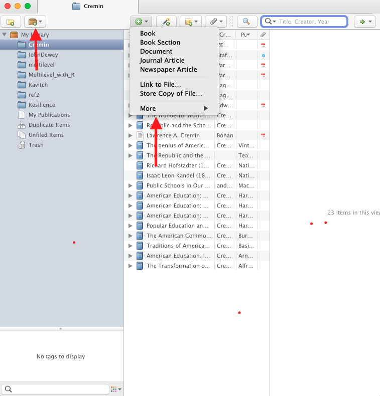
Je kunt ook referentie exporteren van een database als je bijvoorbeeld een literatuursearch uitvoert. In de database zoek je
"icoon of naar een optie dat Share, Cite of Export (afhankelijk van de databas). Selecteer deze optie voor Zotero of .ris. De export zal het bestand (.ris) binnenhalen. Als het niet vanzelf gaat, dubbelklik op het bestand.De makkelijkste manier is allicht om met een Zotero Connector te werken. Je hebt zo’n connector voor Chrome, Google en Firefox. De keuze hangt af van de browser waarmee je werkt. Ikzelf werk met Firefox en daar zal ik hieronder verder op ingaan.
Je kunt overigens ook online de literatuurlijst maken zoterobib. Dat spreekt vanzelf.
Installeren van Zotero en connector
Haal eerst de Zotero connector binnen. In dit geval is dat de Zotero-Firefox conncector.
Als het goed is zie je dan rechtsboven in de browser dit icoontje staan. Als dat gebeurd is, kunnen we een bibliotheek opbouwen.
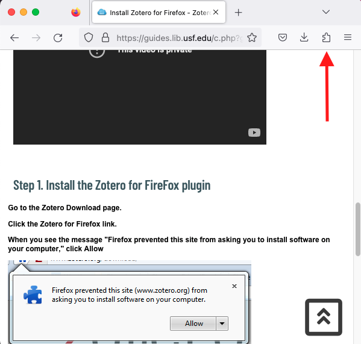
Opbouwen van bibiotheek
Nu ben je klaar om een bibliotheek op te bouwen. Hoe dat gaat kan ik het beste laten zien aan de hand van een voorbeeld. Deze week was ik bezig met het opbouwen van een bibliotheek rondom Lawrence A. Cremin, een onderwijshistoricus die leefde van 1925-1990. Dit heb ik nodig voor mijn blog Democratie en onderwijs. Daarin recenseer ik boeken over dit onderwerp en daar doorheen wil ik het werk bespreken van drie wetenschappers die zich op een bijzondere manier met dit onderwerp hebben beziggehouden: John Dewey, Lawrence Cremin en Diana Ravitch. Deze week werkte ik aan een literatuurlijst van Cremin.
In Zotero had ik een bibliotheek met de naam Cremin aan gemaakt. Vervolgens ben ik naar de zoekmachine van de universiteitsbibliotheek van Amsterdam gegaan en heb ik de naam cremin, lawrence a. ingetikt.
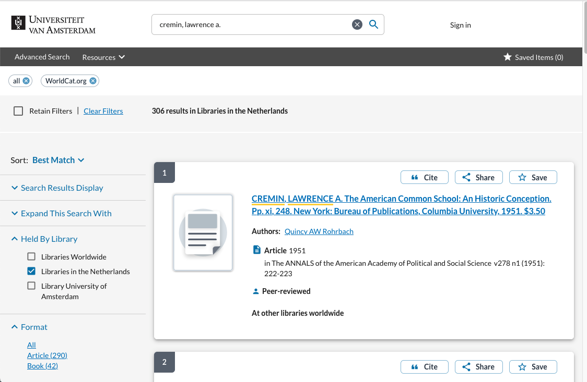
Daarna heb ik in de browser op het icoontje van Zotero getikt en aangegeven dat de Zotero connector de boeken kan binnenhalen. Vervolgens heb ik aangegeven welke hij moet selecteren en deze opgeslagen.
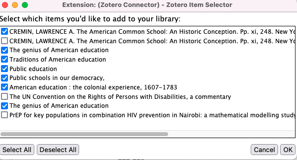
Daarna ben ik opzoek gegaan naar andere boeken van hem. Vervolgens ben ik in Google Scholar op zoek gegaan naar artikelen over Cremin. Daarvoor tikte ik Cremin l.a. memoir biographie in. Ook nu klik ik op het connectoricoontje, tik aan welke artikelen ik wil bewaren en voeg deze toe aan mijn bibliotheek.
Wanneer alles klaar is loop ik nog een keer door de bibliotheek heen, verwijder dubbelingen en maak het consistenter.
Belangrijk is dat de key op een consistente manier wordt ingesteld….
Quarto en toevoegen van citaten aan een document
Vervolgens open ik een New File->Quarto Document en geef het html-bestand de naam Cremin.
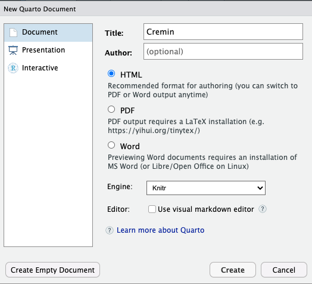
Vervolgens begin je dan met het schrijven van tekst in dat html-bestand
In 1951 schreef Lawrence Cremin zijn proefschrift over de geschiedenis van het Amerikaanse onderwijssysteem en met name over de ontwikkeling en het belang van het gewone en publieke onderwijssteem in Amerika in de 19e eeuw. Het boek heet The American Common School: A Historical Conception (Cremin 1951).
Voor deze referentie ga naar Visual(zie pijl) en dan open je Insert en Citation (zie pijl).
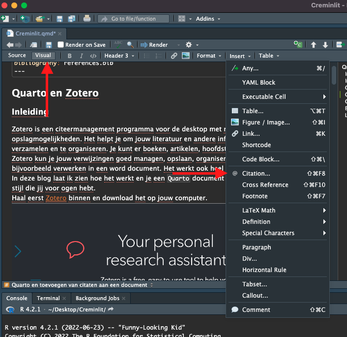
Als je de bibliotheek geopend hebt, kun je de referentie The American Commons school aanklikken.
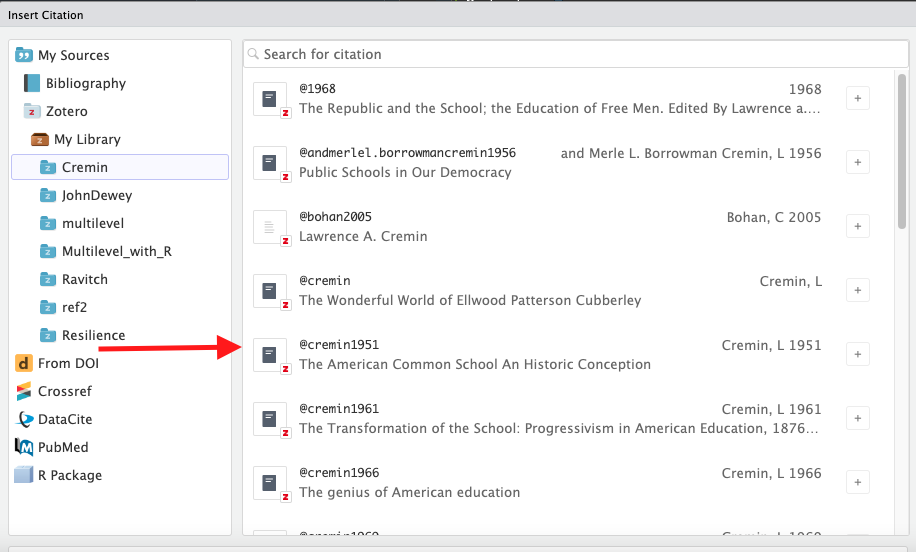
In 1961 kwam zijn The Transformation of the School: Progressivism in American Education uit waarin hij de progressieve onderwijsbeweging en de invloed ervan op het Amerikaanse onderwijs, de theorie en praktijk, onderzoekt (Cremin 1961)
Ellwood Patterson Cubberley was invloedrijk voor het onderwijs en de geschienis van het onderwijs in Amerika aan het begin van de 20ste eeuw. In 1965 verscheen Cremins biografie over haar (Cremin, n.d.)
Hij werd vooral bekend met zijn standaard werkt over de American Education. Het eerste deel is The Colonial Experience 1607-1783 en verscheen in 1972 (Cremin 1972). Acht jaar later (1980) kwam The National Experience, 1783-1876 uit (Cremin 1980). Weer acht jaar later (1988) verscheen The Metropolitan Experience 1876-1980 waarmee hij deze hisorische trilogie afsloot (Cremin 1988) xxx
Ook nog wat secundaire literatuur, waaronder (Lagemann and Graham 1994), (Zembylas 2002) en (Bohan 2005).
Als je in een project gewerkt hebt, worden de gebruikte referenties opgeslagen. Uiteindelijk slaat hij alle verwijzingen als hieronder op in een references.bib-file.
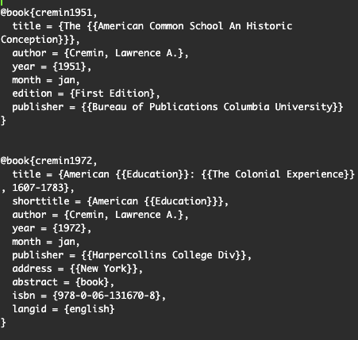
Gebruik van stijlen
Instellen op Zotero style repository. In dit geval heb ik Zotero Style Repository op APA 7the edition ingesteld.
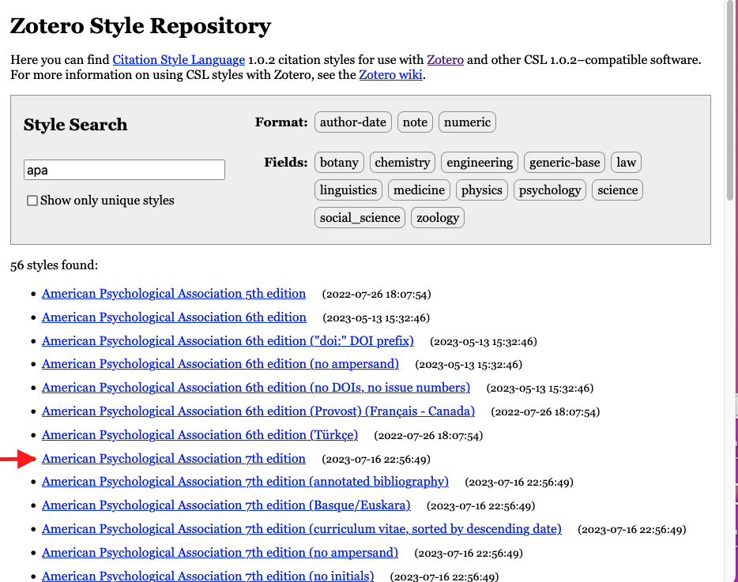
Ingesteld op APA7. Je kunt ook de klasse toevoegen aan de yaml van het quarto document, zoals hier bijvoorbeeld met csl:nature.csl.
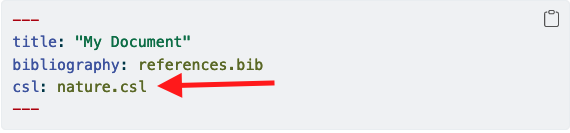
Hier vind je de stijlen die je kunt downloaden en informatie. De stijl kun en moet je als document aan jouw project toevoegen.
Zotero en Word
Er zijn plugins van Zotero voor Word, die veelal automatisch in Word geplaatst worden. Je kunt dan op de taakbalk Zotero zien staan, referenties uit de bibliotheek halen en een literatuurlijst maken. Hier vind je het fraaie resultaat (klik op View Raw).
Enkele tips
- Zotero handleiding
- Yale university over Zotero
- uba over zotero
- leerzame video over verschillende manieren om eenvoudig literatuur toe te voegen van de Idaho State University Library
- Goede uitleg over Zotero als onderdeel van reproduceerbaar onderzoek Reproducible Medical Research with R
- Over Quarto en verwijzingen vind je hier de nodige informatie